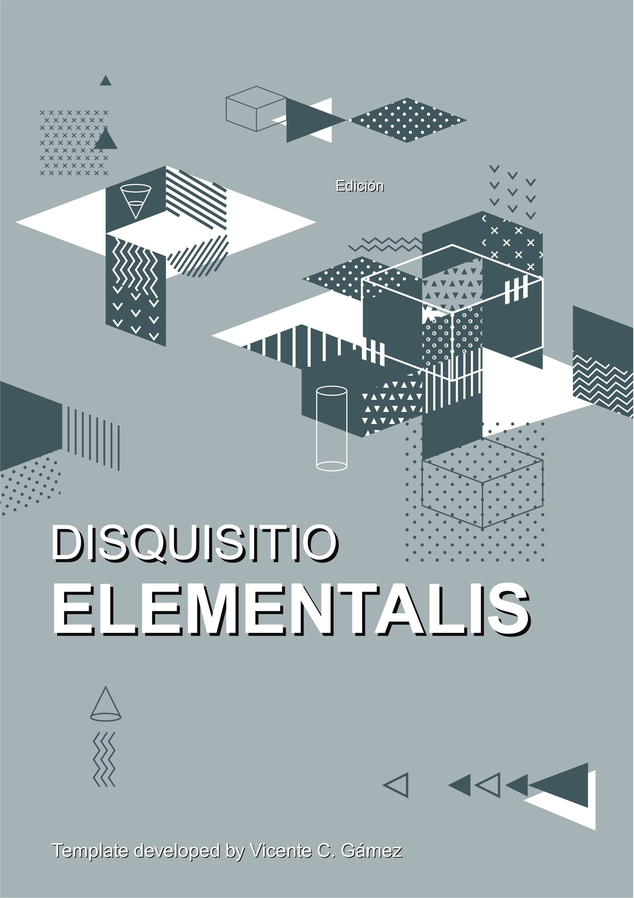
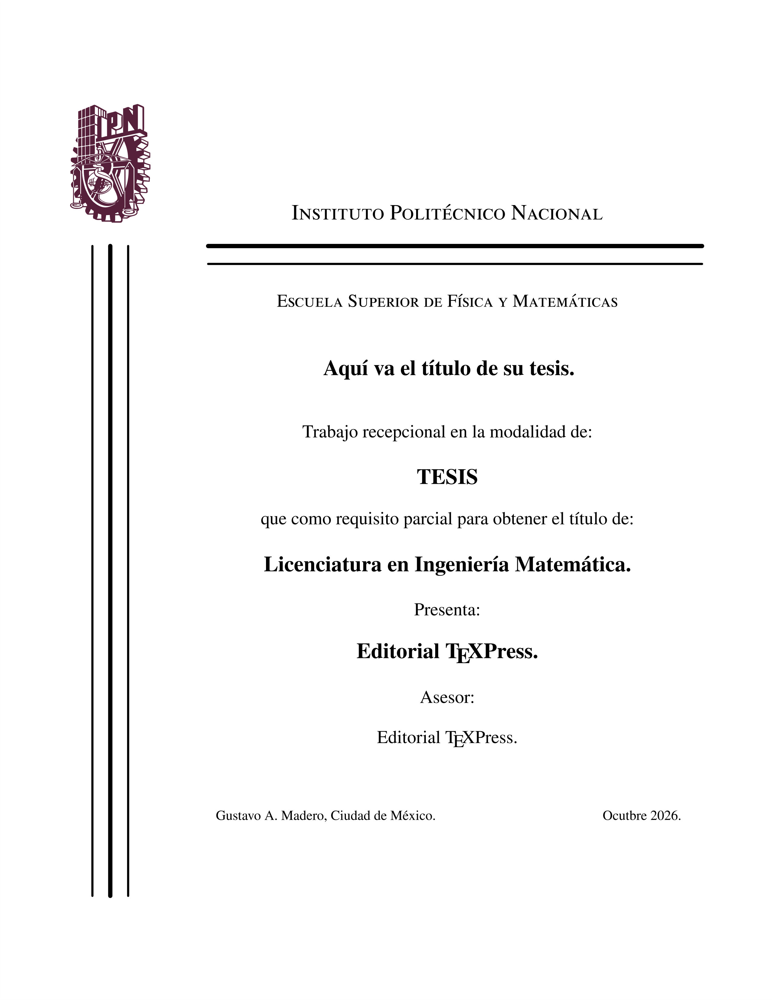
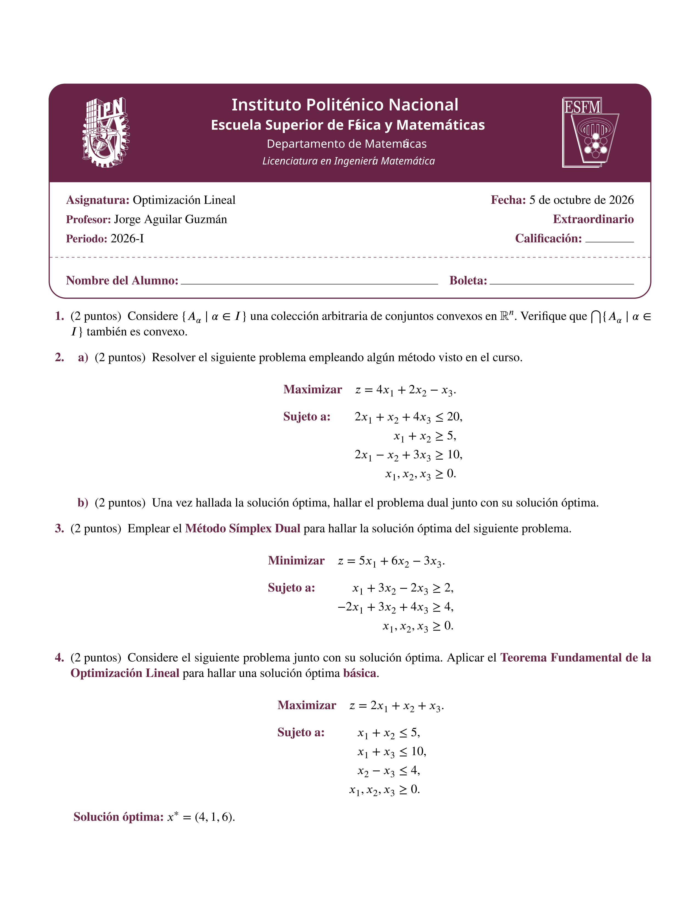
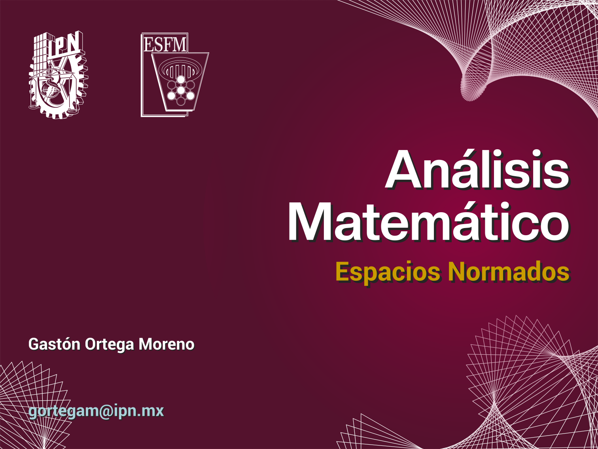

Plantillas y Paquetes Custom
Desarrollo de clases .cls y paquetes .sty para estandarizar la producción de documentos académicos e institucionales.

Disquisitio Elementalis
Plantilla original de alto nivel diseñada específicamente para la publicación de artículos científicos y papers académicos. Integra un diseño moderno a dos columnas, metadatos elegantes para autores, resúmenes estructurados y tipografía optimizada que rivaliza con los estándares de las mejores revistas internacionales de ciencias.

Plantilla para Tesis (ESFM - IPN)
Estructura completa para trabajos terminales y tesis de grado. Configurada con portadas institucionales, índices automatizados (contenido, figuras, tablas), dedicatorias y bibliografía estandarizada. Ideal para proyectos en Ingeniería Matemática o Física, garantizando el cumplimiento de los márgenes y normativas universitarias.

Plantilla deexam.cls
Clase de documento desarrollada para la creación profesional y estandarizada de exámenes académicos. Gestiona automáticamente los encabezados institucionales, el conteo de puntuaciones y la distribución de los espacios de respuesta, optimizando el tiempo de diseño para los docentes.

Plantilla Beamer Análisis Matemático
Estructura visual optimizada para diapositivas académicas utilizando la clase Beamer. Diseñada para mantener la claridad durante exposiciones de matemáticas puras o aplicadas, integrando entornos para teoremas, demostraciones paso a paso, y una navegación limpia que permite a la audiencia seguir el hilo de conceptos complejos.